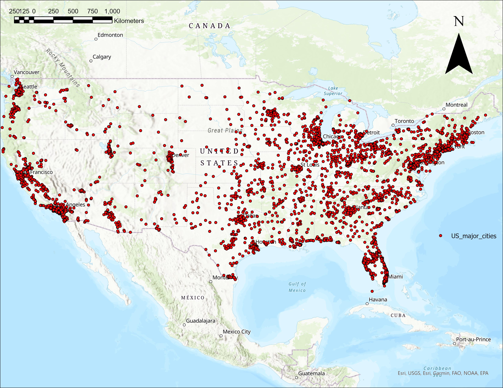

Mitchell Aitken, Julian Cramb, Jackson Cooper
Hurricanes are classified as violent wind storms that are rapidly rotating with a low-pressure center. Hurricanes are formed when warm, humid air from the surface of the ocean begins to rise, where then it encounters colder air that condenses the warm water vapor to form storm clouds and drops of rain. With the increasing prevalence of global warming, the extent, frequency and power of these hurricanes and storms is ever growing. Therefore, the need to understand these storms is also ever growing.
For the purposes of the term project, we will be comparing different data sets to analyze the impact hurricanes have on many different parameters. Our approach to addressing this will be approached as an iterative, explorative process in-order to find relevant and interesting relationships in the
We can then make conclusions about what is impacted by hurricanes and what is not.
Picture of US cities with population over 10 000
Picture of global hurricane tracks

| Name of dataset | Link |
|---|---|
| Global hurricane tracks | Link to dataset |
| Major U.S Cities | Link to dataset |
| Climate Data | Link to dataset |
| John | Link to dataset |